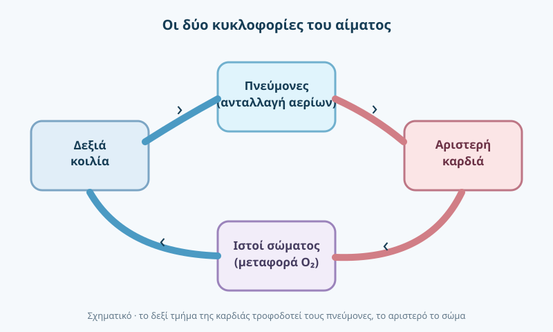

Κατάρτιση ΣΑΕΚ · Α΄ εξάμηνο
Φυσιολογία
Πώς λειτουργεί φυσιολογικά ο ανθρώπινος οργανισμός.
Πάτησε ένα κεφάλαιο για ανάγνωση. Όταν το μελετήσεις, επίλεξε «Ολοκλήρωσα την ανάγνωση».
Σχηματική κυκλοφορία του αίματος
Απλοποιημένη σύνδεση της πνευμονικής και συστηματικής κυκλοφορίας.

Περιεχόμενα μαθήματος · 13 κεφάλαια
01Ομοιόσταση και ανατροφοδότησηΔεν ολοκληρώθηκε
Ομοιόσταση είναι η ικανότητα του οργανισμού να διατηρεί σχετικά σταθερές εσωτερικές συνθήκες, παρά τις αλλαγές του περιβάλλοντος. Θερμοκρασία σώματος, γλυκόζη, οξεοβασική ισορροπία και αρτηριακή πίεση ρυθμίζονται από αλληλεπιδρώντες μηχανισμούς. Στην αρνητική ανατροφοδότηση, η απόκλιση ενεργοποιεί διαδικασίες που τείνουν να την αντιστρέψουν. Η διαταραχή της ομοιόστασης βρίσκεται πίσω από πολλές επείγουσες καταστάσεις.
SOS · Ομοιόσταση = διατήρηση εσωτερικής ισορροπίας, κυρίως με αρνητική ανατροφοδότηση.
Περισσότερη εξήγηση
Αναλυτική κατανόηση
Η ομοιόσταση είναι η διατήρηση εσωτερικών μεταβλητών σε λειτουργικά όρια παρά τις αλλαγές του περιβάλλοντος. Σε μηχανισμό αρνητικής ανατροφοδότησης ένας αισθητήρας ανιχνεύει απόκλιση, ένα κέντρο ελέγχου τη συγκρίνει με τη ρύθμιση και ένα εκτελεστικό όργανο μειώνει την απόκλιση. Παραδείγματα αποτελούν η θερμορρύθμιση και η ρύθμιση της γλυκόζης. Η θετική ανατροφοδότηση ενισχύει ένα ερέθισμα και χρησιμοποιείται σε συγκεκριμένες διαδικασίες όπως ο τοκετός.
Σύνδεση με το έργο του διασώστη
Ο διασώστης παρατηρεί τι σημαίνει διαταραχή ομοιόστασης μέσα από μεταβολές σε συνείδηση, αναπνοή, σφύξεις, θερμοκρασία και αιμάτωση.
Ερώτηση αυτοελέγχου
Τι κάνει η αρνητική ανατροφοδότηση;
Δες την ενδεικτική απάντηση
Αντισταθμίζει μια απόκλιση για να επαναφέρει μια παράμετρο προς το φυσιολογικό λειτουργικό εύρος.
Συμπληρωματική σημείωση
Σε βάθος — επεξήγηση
Η ομοιόσταση είναι δυναμική, όχι απόλυτα ακίνητη ισορροπία. Θερμοϋποδοχείς, εγκέφαλος, ορμόνες, νεφροί και καρδιαγγειακό σύστημα συνεργάζονται για να διατηρείται κατάλληλο εσωτερικό περιβάλλον. Στην αρνητική ανατροφοδότηση η απάντηση μειώνει τη μεταβολή που τη δημιούργησε. Στην κλινική πράξη μία μεμονωμένη τιμή μπορεί να φαίνεται ανεκτή, ενώ η επιδείνωση με την πάροδο του χρόνου έχει μεγάλη σημασία.
Πηγή προγράμματος: Επίσημος οδηγός κατάρτισης 2024 (περιγραφή μαθήματος, όχι πιστοποίηση των επιμέρους κλινικών ισχυρισμών).
02Φυσιολογία της αναπνοήςΔεν ολοκληρώθηκε
Με την εισπνοή το διάφραγμα συσπάται και η θωρακική κοιλότητα διευρύνεται. Στις κυψελίδες γίνεται η ανταλλαγή οξυγόνου και διοξειδίου του άνθρακα με το αίμα. Ο αερισμός αφορά τη μετακίνηση του αέρα, ενώ η οξυγόνωση την είσοδο οξυγόνου στο αίμα· δεν είναι ταυτόσημες έννοιες. Η συχνότητα, το βάθος και η αποτελεσματικότητα της αναπνοής αξιολογούνται μαζί με την κλινική εικόνα, όχι μόνο με ένα οξύμετρο.
SOS · Αερισμός = μετακίνηση αέρα· οξυγόνωση = πρόσληψη Ο₂· η ανταλλαγή αερίων γίνεται στις κυψελίδες.
Περισσότερη εξήγηση
Αναλυτική κατανόηση
Ο αερισμός μετακινεί αέρα στους πνεύμονες, η διάχυση επιτρέπει την ανταλλαγή αερίων στην κυψελιδοτριχοειδική μεμβράνη και η αιμάτωση μεταφέρει αίμα στα πνευμονικά τριχοειδή. Η μεταφορά οξυγόνου εξαρτάται σε μεγάλο βαθμό από την αιμοσφαιρίνη. Κορεσμός SpO₂, συχνότητα αναπνοών και αναπνευστικό έργο περιγράφουν διαφορετικές πλευρές της κατάστασης και δεν πρέπει να εκτιμώνται μεμονωμένα.
Σύνδεση με το έργο του διασώστη
Ένας φυσιολογικός αριθμός στο οξύμετρο δεν αποκλείει σοβαρή υποαεριστική διαταραχή ή επαπειλούμενη εξάντληση. Παρατήρησε πάντα συχνότητα, βάθος, συμμετρία και επίπεδο συνείδησης.
Ερώτηση αυτοελέγχου
Ποια είναι η διαφορά αερισμού και οξυγόνωσης;
Δες την ενδεικτική απάντηση
Αερισμός = μετακίνηση αέρα και αποβολή CO₂· οξυγόνωση = είσοδος/μεταφορά Ο₂ στο αίμα.
Συμπληρωματική σημείωση
Σε βάθος — επεξήγηση
Ο αερισμός είναι η είσοδος και έξοδος αέρα· η διάχυση είναι η μετακίνηση αερίων μεταξύ κυψελίδων και αίματος. Η αιμοσφαιρίνη μεταφέρει το μεγαλύτερο μέρος του οξυγόνου. Η αναπνευστική συχνότητα από μόνη της δεν αποδεικνύει επαρκή ανταλλαγή αερίων: αξιολογούμε βάθος αναπνοής, έργο αναπνοής, επίπεδο συνείδησης και άλλες ενδείξεις. Η φυσιολογία βοηθά στην κατανόηση της επιδείνωσης.
Πηγή προγράμματος: Επίσημος οδηγός κατάρτισης 2024 (περιγραφή μαθήματος, όχι πιστοποίηση των επιμέρους κλινικών ισχυρισμών).
03Κυκλοφορία και αιμάτωσηΔεν ολοκληρώθηκε
Η καρδιά ωθεί το αίμα μέσα από δύο κυκλοφορίες: τη συστηματική και την πνευμονική. Η καρδιακή παροχή εξαρτάται από την καρδιακή συχνότητα και τον όγκο παλμού. Αιμάτωση είναι η παροχή αίματος στους ιστούς, ώστε να λαμβάνουν οξυγόνο και θρεπτικά στοιχεία. Σημεία ανεπαρκούς αιμάτωσης μπορεί να περιλαμβάνουν μεταβολή της συνείδησης, ψυχρό δέρμα και διαταραχές σφυγμού.
SOS · Καρδιακή παροχή = συχνότητα × όγκος παλμού· αιμάτωση = παροχή αίματος και Ο₂ στους ιστούς.
Περισσότερη εξήγηση
Αναλυτική κατανόηση
Η καρδιακή παροχή εξαρτάται από τη συχνότητα και τον όγκο παλμού. Η αρτηριακή πίεση σχετίζεται τόσο με την καρδιακή παροχή όσο και με την περιφερική αγγειακή αντίσταση. Η μικροκυκλοφορία στα τριχοειδή είναι το σημείο ανταλλαγής οξυγόνου και θρεπτικών ουσιών. Η έγκαιρη αναγνώριση ανεπαρκούς αιμάτωσης βασίζεται σε συνδυασμό ενδείξεων, π.χ. συνείδηση, δέρμα, σφύξεις και πίεση.
Σύνδεση με το έργο του διασώστη
Μια μεμονωμένη αρτηριακή πίεση δεν αρκεί για να αποκλείσει shock· εντόπισε τάσεις και συνδυασμό ευρημάτων.
Ερώτηση αυτοελέγχου
Από τι προκύπτει η καρδιακή παροχή;
Δες την ενδεικτική απάντηση
Από τη συχνότητα των παλμών επί τον όγκο παλμού.
Συμπληρωματική σημείωση
Σε βάθος — επεξήγηση
Η καρδιακή παροχή εξαρτάται από τη συχνότητα και τον όγκο παλμού, αλλά η αποτελεσματική αιμάτωση επηρεάζεται και από τον αγγειακό τόνο και την κατάσταση της μικροκυκλοφορίας. Ο σφυγμός περιγράφεται ως προς συχνότητα, ρυθμό και ποιότητα. Διαφορετικοί μηχανισμοί μπορούν να προκαλέσουν ανεπαρκή ιστική άρδευση, γι’ αυτό εξετάζονται περισσότερες από μία παράμετροι και η τάση μεταβολής τους.
Πηγή προγράμματος: Επίσημος οδηγός κατάρτισης 2024 (περιγραφή μαθήματος, όχι πιστοποίηση των επιμέρους κλινικών ισχυρισμών).
04Νευρική ρύθμιση και μεταβολισμόςΔεν ολοκληρώθηκε
Το αυτόνομο νευρικό σύστημα ρυθμίζει ακούσιες λειτουργίες, όπως καρδιακή συχνότητα και αγγειακό τόνο. Ο μεταβολισμός χρησιμοποιεί θρεπτικά συστατικά για την παραγωγή ενέργειας. Η ινσουλίνη και η γλυκαγόνη συμβάλλουν στη ρύθμιση της γλυκόζης. Η φυσιολογία συνδέεται άμεσα με την κατανόηση διαταραχών συνείδησης, υπογλυκαιμίας και stress.
SOS · Αυτόνομο νευρικό σύστημα ρυθμίζει ακούσιες λειτουργίες· ινσουλίνη μειώνει και γλυκαγόνη αυξάνει τη γλυκόζη.
Περισσότερη εξήγηση
Αναλυτική κατανόηση
Το αυτόνομο νευρικό σύστημα συντονίζει πολλές ακούσιες λειτουργίες όπως καρδιακή συχνότητα και αγγειακό τόνο. Το συμπαθητικό συνήθως προάγει την απάντηση σε καταπόνηση, ενώ το παρασυμπαθητικό συμβάλλει σε λειτουργίες ανάπαυσης. Η αερόβια παραγωγή ενέργειας απαιτεί οξυγόνο και κατάλληλα υποστρώματα, ενώ η αναερόβια γλυκόλυση μπορεί να παράγει μικρότερη ποσότητα ATP χωρίς άμεση χρήση οξυγόνου. Ο εγκέφαλος εξαρτάται από συνεχή επαρκή παροχή αίματος, οξυγόνου και γλυκόζης. Διαταραχές γλυκόζης, οξυγόνωσης ή αιμάτωσης μπορούν να εκδηλωθούν με αλλαγή συμπεριφοράς ή συνείδησης.
Σύνδεση με το έργο του διασώστη
Στη διαταραχή συνείδησης σκέψου πρώτα αναστρέψιμες αιτίες κατά την καθιερωμένη πρωτογενή εκτίμηση, χωρίς να παραλείπεις επικίνδυνες άλλες αιτίες.
Πηγή: NCBI Bookshelf · Αναερόβια γλυκόλυση ↗ (εκπαιδευτική επισήμανση).
Ερώτηση αυτοελέγχου
Ποιο σύστημα συμμετέχει στη ρύθμιση της καρδιακής συχνότητας χωρίς συνειδητό έλεγχο;
Δες την ενδεικτική απάντηση
Το αυτόνομο νευρικό σύστημα.
Συμπληρωματική σημείωση
Σε βάθος — επεξήγηση
Το αυτόνομο νευρικό σύστημα επηρεάζει τον καρδιακό ρυθμό, την κινητικότητα του γαστρεντερικού και τον τόνο των αγγείων. Οι ορμόνες δρουν ως χημικά σήματα μεταξύ οργάνων, ενώ ο μεταβολισμός περιλαμβάνει όλες τις διεργασίες παραγωγής και χρήσης ενέργειας. Μια οξεία ασθένεια μπορεί να επηρεάσει ταυτόχρονα νευρική λειτουργία, γλυκόζη και κυκλοφορία, δείχνοντας τη σύνδεση των συστημάτων.
Πηγή προγράμματος: Επίσημος οδηγός κατάρτισης 2024 (περιγραφή μαθήματος, όχι πιστοποίηση των επιμέρους κλινικών ισχυρισμών).
05Μεμβράνες και μεταφορά ουσιώνΔεν ολοκληρώθηκε
Η κυτταρική μεμβράνη είναι επιλεκτικός φραγμός που επιτρέπει διαφορετικά την κίνηση νερού, ιόντων και άλλων μορίων. Με διάχυση τα σωματίδια μετακινούνται κατά μήκος διαφοράς συγκέντρωσης, ενώ στην ώσμωση μετακινείται κυρίως νερό μέσω ημιπερατού φραγμού.
SOS · Διάχυση: μετακίνηση κατά τη βαθμίδα συγκέντρωσης· ώσμωση: μετακίνηση νερού μέσα από ημιπερατή μεμβράνη.
Περισσότερη εξήγηση
Θεωρία & κατανόηση
Η ενεργός μεταφορά απαιτεί ενέργεια για να μετακινεί ουσίες ενάντια στις βαθμίδες τους. Η ισορροπία υγρών μεταξύ ενδοκυττάριου, διάμεσου και ενδαγγειακού χώρου επηρεάζει την κυκλοφορία και τη λειτουργία των κυττάρων.
Βασικό σημείο για επανάληψη
Διάχυση: κίνηση κατά βαθμίδα· ενεργός μεταφορά: χρειάζεται ενέργεια.
Ερώτηση αυτοελέγχου
Τι είναι η ώσμωση;
Δες την ενδεικτική απάντηση
Η μετακίνηση νερού μέσω ημιπερατής μεμβράνης ως αποτέλεσμα διαφοράς συγκέντρωσης διαλυτών ουσιών.
Συμπληρωματική σημείωση
Σε βάθος — επεξήγηση
Η παθητική διάχυση δεν απαιτεί άμεση κατανάλωση ενέργειας, ενώ η ενεργός μεταφορά χρησιμοποιεί μηχανισμούς όπως η αντλία νατρίου–καλίου. Η ώσμωση σχετίζεται με τη μετακίνηση νερού ανάμεσα σε χώρους διαφορετικής ωσμωτικής δραστικότητας. Η διαφορά ενδοκυττάριου και εξωκυττάριου υγρού είναι βασική για την κατανόηση αφυδάτωσης, οιδήματος και μεταβολών ηλεκτρολυτών.
Πηγή προγράμματος: Επίσημος οδηγός κατάρτισης 2024 (περιγραφή μαθήματος, όχι πιστοποίηση των επιμέρους κλινικών ισχυρισμών).
06Νευρική ώση και αντανακλαστικάΔεν ολοκληρώθηκε
Οι νευρώνες μεταφέρουν σήματα μέσω μεταβολών του ηλεκτρικού δυναμικού της μεμβράνης. Ένα δυναμικό ενέργειας διαδίδεται κατά μήκος του νευράξονα και η επικοινωνία σε πολλές συνάψεις γίνεται μέσω νευροδιαβιβαστών.
SOS · Η νευρική ώση είναι δυναμικό ενέργειας· οι συνάψεις συνήθως μεταφέρουν σήματα με νευροδιαβιβαστές.
Περισσότερη εξήγηση
Θεωρία & κατανόηση
Το αντανακλαστικό είναι ταχεία και σχετικά στερεότυπη απάντηση σε ερέθισμα μέσω αντανακλαστικού τόξου. Ο εγκέφαλος συντονίζει ανώτερες λειτουργίες, ενώ ο νωτιαίος μυελός συμμετέχει σε κινητικά και αντανακλαστικά κυκλώματα.
Βασικό σημείο για επανάληψη
Νευρώνες, δυναμικά ενέργειας, συνάψεις, νευροδιαβιβαστές.
Εμβάθυνση φυσιολογικού μηχανισμού
Η νευρική ώση είναι παροδική μεταβολή του ηλεκτρικού δυναμικού της κυτταρικής μεμβράνης. Τα ερεθίσματα μεταδίδονται κατά μήκος του νευράξονα και στα σημεία επικοινωνίας μεταξύ κυττάρων συμμετέχουν νευροδιαβιβαστές. Στο απλό αντανακλαστικό η απάντηση μπορεί να οργανώνεται σε επίπεδο νωτιαίου μυελού χωρίς να απαιτείται συνειδητή απόφαση. Η διατήρηση ανταπόκρισης δεν αποκλείει άλλη επικίνδυνη βλάβη.
Ερώτηση αυτοελέγχου
Τι μεταφέρεται κατά μήκος ενός νευράξονα;
Δες την ενδεικτική απάντηση
Η νευρική ώση / το δυναμικό ενέργειας.
Συμπληρωματική σημείωση
Σε βάθος — επεξήγηση
Το δυναμικό ενέργειας δημιουργείται όταν ανοίγουν και κλείνουν ιοντικοί δίαυλοι, προκαλώντας ηλεκτρικές μεταβολές στη μεμβράνη. Η σύναψη μεταβιβάζει πληροφορία σε άλλο νευρώνα ή κύτταρο-στόχο. Ένα αντανακλαστικό τόξο μπορεί να λειτουργεί στο επίπεδο του νωτιαίου μυελού. Η κλινική εκτίμηση νευρολογικής ανταπόκρισης δεν πρέπει να συγχέεται με πλήρη νευρολογική διάγνωση.
Πηγή προγράμματος: Επίσημος οδηγός κατάρτισης 2024 (περιγραφή μαθήματος, όχι πιστοποίηση των επιμέρους κλινικών ισχυρισμών).
07Καρδιακός κύκλος και ηλεκτρική αγωγήΔεν ολοκληρώθηκε
Η καρδιακή λειτουργία εναλλάσσει συστολή και διαστολή. Κατά τη διαστολή οι κοιλίες γεμίζουν με αίμα· κατά τη συστολή εξωθούν αίμα προς τις αρτηρίες. Το φλεβόκομβο ενεργοποιεί φυσιολογικά τον καρδιακό ρυθμό, και η ώση διαδίδεται στο ερεθισματαγωγό σύστημα.
SOS · Διαστολή = γέμισμα κοιλιών· συστολή = εξώθηση αίματος· ο φλεβόκομβος είναι φυσιολογικός βηματοδότης.
Περισσότερη εξήγηση
Θεωρία & κατανόηση
Ο όγκος παλμού είναι η ποσότητα αίματος που εξωθεί μια κοιλία σε κάθε συστολή. Η καρδιακή παροχή είναι το γινόμενο όγκου παλμού και καρδιακής συχνότητας. Έτσι εξηγείται πώς μεταβολές του ρυθμού ή της ισχύος της αντλίας επηρεάζουν την αιμάτωση.
Βασικό σημείο για επανάληψη
Καρδιακή παροχή = καρδιακή συχνότητα × όγκος παλμού.
Ερώτηση αυτοελέγχου
Τι συμβαίνει στη διαστολή των κοιλιών;
Δες την ενδεικτική απάντηση
Γεμίζουν με αίμα.
Συμπληρωματική σημείωση
Σε βάθος — επεξήγηση
Η διαστολή επιτρέπει πλήρωση των κοιλιών και η συστολή προωθεί αίμα στην πνευμονική και στη συστηματική κυκλοφορία. Ο φλεβόκομβος συνήθως πυροδοτεί τον ρυθμό και η αγωγή περνά από τον κολποκοιλιακό κόμβο στο σύστημα His–Purkinje. Η ηλεκτρική δραστηριότητα δεν ταυτίζεται πάντοτε με αποτελεσματική μηχανική συστολή, γι’ αυτό το ηλεκτροκαρδιογράφημα αξιολογείται μαζί με τον ασθενή.
Πηγή προγράμματος: Επίσημος οδηγός κατάρτισης 2024 (περιγραφή μαθήματος, όχι πιστοποίηση των επιμέρους κλινικών ισχυρισμών).
08Πίεση, αντίσταση και μικροκυκλοφορίαΔεν ολοκληρώθηκε
Η αρτηριακή πίεση εξαρτάται από την καρδιακή παροχή και την αντίσταση του αγγειακού δικτύου. Οι αρτηρίες μεταφέρουν αίμα υπό υψηλότερη πίεση από τις φλέβες, ενώ τα τριχοειδή είναι κύριος τόπος ανταλλαγής ουσιών με τους ιστούς.
SOS · Η αρτηριακή πίεση εξαρτάται από παροχή και αγγειακές αντιστάσεις· στα τριχοειδή γίνεται ανταλλαγή ουσιών.
Περισσότερη εξήγηση
Θεωρία & κατανόηση
Η αιμάτωση δεν εκτιμάται από έναν αριθμό μόνο. Το επίπεδο συνείδησης, η θερμοκρασία δέρματος, ο περιφερικός σφυγμός και άλλα ευρήματα συμπληρώνουν την κλινική εικόνα. Η πίεση μπορεί να παραμένει φαινομενικά φυσιολογική σε πρώιμη αντιρρόπηση.
Βασικό σημείο για επανάληψη
Αρτηρίες → αρτηρίδια → τριχοειδή → φλεβίδια → φλέβες.
Ερώτηση αυτοελέγχου
Πού γίνεται κατά κύριο λόγο η ανταλλαγή ουσιών με τους ιστούς;
Δες την ενδεικτική απάντηση
Στα τριχοειδή.
Συμπληρωματική σημείωση
Σε βάθος — επεξήγηση
Η αρτηριακή πίεση εξαρτάται από αλληλεπίδραση καρδιακής παροχής και περιφερικής αντίστασης. Τα αρτηρίδια ρυθμίζουν σημαντικά την αντίσταση, ενώ τα τριχοειδή επιτρέπουν την ανταλλαγή ουσιών με τους ιστούς. Η ταχεία επαναπλήρωση τριχοειδών αποτελεί βοηθητικό εύρημα, όχι αυτόνομο διαγνωστικό κριτήριο. Η εξέλιξη της πίεσης και των άλλων ευρημάτων πρέπει να εκτιμάται συνολικά.
Πηγή προγράμματος: Επίσημος οδηγός κατάρτισης 2024 (περιγραφή μαθήματος, όχι πιστοποίηση των επιμέρους κλινικών ισχυρισμών).
09Αερισμός, διάχυση και μεταφορά αερίωνΔεν ολοκληρώθηκε
Ο αερισμός μετακινεί αέρα από και προς τις κυψελίδες. Η διάχυση μετακινεί οξυγόνο από τις κυψελίδες προς το αίμα και διοξείδιο του άνθρακα αντίθετα. Η αιμοσφαιρίνη των ερυθρών αιμοσφαιρίων μεταφέρει το μεγαλύτερο μέρος του οξυγόνου στο αίμα.
SOS · Η αιμοσφαιρίνη μεταφέρει το μεγαλύτερο μέρος του Ο₂· το CO₂ απομακρύνεται μέσω πνευμονικού αερισμού.
Περισσότερη εξήγηση
Θεωρία & κατανόηση
Ο κορεσμός οξυγόνου δεν μετρά απευθείας την αποτελεσματικότητα του αερισμού ούτε την αιμοσφαιρίνη ή την αιμάτωση όλων των ιστών. Ένας άνθρωπος μπορεί να παρουσιάζει ανεπαρκή αναπνευστική προσπάθεια παρά πρόσκαιρα ικανοποιητική ένδειξη οξυμέτρου.
Βασικό σημείο για επανάληψη
Αερισμός ≠ οξυγόνωση ≠ αιμάτωση.
Ερώτηση αυτοελέγχου
Ποιο μόριο μεταφέρει το μεγαλύτερο μέρος του οξυγόνου στο αίμα;
Δες την ενδεικτική απάντηση
Η αιμοσφαιρίνη.
Συμπληρωματική σημείωση
Σε βάθος — επεξήγηση
Το διοξείδιο του άνθρακα παράγεται στον μεταβολισμό και απομακρύνεται κυρίως με την αναπνοή. Η οξυγόνωση δεν είναι συνώνυμη με τον αερισμό: ένας ασθενής μπορεί να παρουσιάζει πρόβλημα απομάκρυνσης CO₂ ακόμη και όταν η οξυμετρία δεν δείχνει όλη τη σοβαρότητα. Το παλμικό οξύμετρο έχει περιορισμούς, για παράδειγμα σε χαμηλή περιφερική αιμάτωση. Η κλινική παρατήρηση παραμένει κρίσιμη.
Πηγή προγράμματος: Επίσημος οδηγός κατάρτισης 2024 (περιγραφή μαθήματος, όχι πιστοποίηση των επιμέρους κλινικών ισχυρισμών).
10Οξεοβασική ισορροπίαΔεν ολοκληρώθηκε
Το pH δείχνει την οξύτητα ή αλκαλικότητα ενός διαλύματος. Στον οργανισμό, τα ρυθμιστικά διαλύματα, οι πνεύμονες και οι νεφροί συνεργάζονται για να διατηρούν τη φυσιολογική οξεοβασική ισορροπία. Το διοξείδιο του άνθρακα συνδέει άμεσα τον αερισμό με αυτή την ισορροπία.
SOS · Οξεοβασική ρύθμιση: ρυθμιστικά συστήματα, πνεύμονες (CO₂) και νεφροί (οξέα/διττανθρακικά).
Περισσότερη εξήγηση
Θεωρία & κατανόηση
Οι πνεύμονες μπορούν να μεταβάλλουν σχετικά γρήγορα την αποβολή διοξειδίου του άνθρακα μέσω της αναπνοής. Οι νεφροί ρυθμίζουν τη συγκράτηση ή απέκκριση οξέων και διττανθρακικών σε μεγαλύτερο χρονικό διάστημα. Η ερμηνεία διαταραχών απαιτεί κλινικό πλαίσιο και, όπου ενδείκνυται, εργαστηριακά δεδομένα.
Βασικό σημείο για επανάληψη
Πνεύμονες: CO₂ · νεφροί: H⁺ και HCO₃⁻.
Ερώτηση αυτοελέγχου
Ποιο όργανο ρυθμίζει σχετικά γρήγορα την αποβολή CO₂;
Δες την ενδεικτική απάντηση
Οι πνεύμονες.
Συμπληρωματική σημείωση
Σε βάθος — επεξήγηση
Το pH επηρεάζεται από συστήματα ρυθμιστικών διαλυμάτων, τη νεφρική αποβολή οξέων και τον αναπνευστικό έλεγχο του CO₂. Η οξέωση και η αλκάλωση μπορούν να έχουν μεταβολικό ή αναπνευστικό υπόβαθρο. Η διάκριση απαιτεί κατάλληλες μετρήσεις και ιατρική ερμηνεία. Για τον σπουδαστή σημαντικό είναι να κατανοεί πώς αναπνευστική ανεπάρκεια και κυκλοφορική διαταραχή επηρεάζουν την οξεοβασική ισορροπία.
Πηγή προγράμματος: Επίσημος οδηγός κατάρτισης 2024 (περιγραφή μαθήματος, όχι πιστοποίηση των επιμέρους κλινικών ισχυρισμών).
11Νεφρική λειτουργία και ισοζύγιο υγρώνΔεν ολοκληρώθηκε
Ο νεφρώνας είναι η βασική λειτουργική μονάδα του νεφρού. Το αίμα διηθείται στο σπείραμα και κατά μήκος των σωληναρίων γίνεται επαναρρόφηση νερού και χρήσιμων ουσιών, καθώς και έκκριση άλλων. Με αυτόν τον τρόπο σχηματίζονται τα ούρα.
SOS · Ο νεφρώνας διηθεί αίμα, επαναρροφά νερό και χρήσιμες ουσίες και συμμετέχει στην παραγωγή ούρων.
Περισσότερη εξήγηση
Θεωρία & κατανόηση
Οι νεφροί συμβάλλουν στην ισορροπία νατρίου, καλίου, νερού και οξέων. Το ισοζύγιο εισροών και απωλειών υγρών επηρεάζει τον όγκο κυκλοφορούντος αίματος. Μεταβολές στη διούρηση μπορεί να αποτελούν σημαντικό στοιχείο της γενικής κατάστασης.
Βασικό σημείο για επανάληψη
Νεφρώνας = σπείραμα + σωληναριακό σύστημα.
Ερώτηση αυτοελέγχου
Ποια είναι η λειτουργική μονάδα του νεφρού;
Δες την ενδεικτική απάντηση
Ο νεφρώνας.
Συμπληρωματική σημείωση
Σε βάθος — επεξήγηση
Οι νεφροί φιλτράρουν πλάσμα και επαναρροφούν χρήσιμες ουσίες, ενώ εκκρίνουν ορισμένα προϊόντα στον σωληναριακό αυλό. Οι ορμόνες ADH και αλδοστερόνη συμβάλλουν με διαφορετικούς τρόπους στη διαχείριση νερού και νατρίου. Η νεφρική λειτουργία επηρεάζει τον όγκο κυκλοφορούντος αίματος και τη συγκέντρωση ηλεκτρολυτών. Η παραγωγή ούρων αποτελεί σημαντική ένδειξη σε νοσοκομειακή παρακολούθηση.
Πηγή προγράμματος: Επίσημος οδηγός κατάρτισης 2024 (περιγραφή μαθήματος, όχι πιστοποίηση των επιμέρους κλινικών ισχυρισμών).
12Πέψη, απορρόφηση και θρέψηΔεν ολοκληρώθηκε
Η πέψη μετατρέπει σύνθετες ουσίες της τροφής σε μικρότερες που μπορούν να απορροφηθούν. Οι υδατάνθρακες παρέχουν γλυκόζη, οι πρωτεΐνες αμινοξέα και τα λίπη λιπαρά οξέα και άλλα προϊόντα. Στο λεπτό έντερο υπάρχουν λάχνες που αυξάνουν την επιφάνεια απορρόφησης.
SOS · Η κύρια απορρόφηση θρεπτικών γίνεται στο λεπτό έντερο με μεγάλη επιφάνεια λαχνών.
Περισσότερη εξήγηση
Θεωρία & κατανόηση
Η λειτουργία ήπατος, παγκρέατος και χολής είναι σημαντική για την επεξεργασία και αξιοποίηση των θρεπτικών συστατικών. Η απορρόφηση νερού και ηλεκτρολυτών συνεχίζεται και στο παχύ έντερο. Διαταραχές πρόσληψης ή απορρόφησης μπορούν να επηρεάσουν τα διαθέσιμα υγρά και την ενεργειακή κατάσταση.
Βασικό σημείο για επανάληψη
Λεπτό έντερο: κύρια απορρόφηση θρεπτικών· παχύ: σημαντική απορρόφηση νερού.
Ερώτηση αυτοελέγχου
Πού απορροφώνται τα περισσότερα θρεπτικά συστατικά;
Δες την ενδεικτική απάντηση
Στο λεπτό έντερο.
Συμπληρωματική σημείωση
Σε βάθος — επεξήγηση
Οι υδατάνθρακες, οι πρωτεΐνες και τα λίπη υφίστανται πεπτική επεξεργασία πριν την απορρόφηση. Οι λάχνες και οι μικρολάχνες αυξάνουν τη διαθέσιμη επιφάνεια του λεπτού εντέρου. Η πυλαία κυκλοφορία μεταφέρει πολλές απορροφημένες ουσίες προς το ήπαρ. Το γαστρεντερικό σύστημα συνδέεται με το ενδοκρινικό και το κυκλοφορικό: γι’ αυτό σοβαρή νόσος σε ένα μπορεί να επηρεάσει τα άλλα.
Πηγή προγράμματος: Επίσημος οδηγός κατάρτισης 2024 (περιγραφή μαθήματος, όχι πιστοποίηση των επιμέρους κλινικών ισχυρισμών).
13Ενδοκρινής ρύθμιση και γλυκόζηΔεν ολοκληρώθηκε
Οι ενδοκρινείς αδένες απελευθερώνουν ορμόνες στο αίμα. Το πάγκρεας εκκρίνει ινσουλίνη που διευκολύνει την πρόσληψη και αποθήκευση γλυκόζης, και γλυκαγόνη που συμβάλλει στην αύξηση της γλυκόζης αίματος.
SOS · Πάγκρεας: ινσουλίνη διευκολύνει πρόσληψη γλυκόζης· γλυκαγόνη κινητοποιεί γλυκόζη.
Περισσότερη εξήγηση
Θεωρία & κατανόηση
Ο υποθάλαμος και η υπόφυση συμμετέχουν σε πολλούς άξονες ορμονικής ρύθμισης. Ο θυρεοειδής επηρεάζει τον μεταβολισμό, ενώ τα επινεφρίδια εκκρίνουν ορμόνες σημαντικές για την απόκριση στο στρες. Για την προνοσοκομειακή εκτίμηση είναι σημαντικό να συνδέεται η γλυκόζη με τη νευρολογική εικόνα.
Βασικό σημείο για επανάληψη
Ινσουλίνη και γλυκαγόνη έχουν αντίρροπες δράσεις στη γλυκόζη.
Ερώτηση αυτοελέγχου
Ποια ορμόνη προάγει την πρόσληψη γλυκόζης από πολλούς ιστούς;
Δες την ενδεικτική απάντηση
Η ινσουλίνη.
Συμπληρωματική σημείωση
Σε βάθος — επεξήγηση
Η ινσουλίνη βοηθά πολλά κύτταρα να προσλαμβάνουν και να χρησιμοποιούν γλυκόζη, ενώ η γλυκαγόνη υποστηρίζει την αύξηση της γλυκόζης όταν χρειάζεται. Οι θυρεοειδικές ορμόνες επηρεάζουν τον ρυθμό μεταβολισμού και οι ορμόνες του στρες μεταβάλλουν την ενεργειακή ισορροπία. Τα συμπτώματα διαταραχών γλυκόζης μπορεί να επικαλύπτονται με άλλες επείγουσες καταστάσεις. Η τεκμηριωμένη μέτρηση είναι ουσιαστική.
Πηγή προγράμματος: Επίσημος οδηγός κατάρτισης 2024 (περιγραφή μαθήματος, όχι πιστοποίηση των επιμέρους κλινικών ισχυρισμών).
Πηγές και τεκμηρίωση
Διάρθρωση μαθημάτων: επίσημος Οδηγός Κατάρτισης, Σεπτέμβριος 2024, ενότητα 2.1, σελίδα 25 (έντυπη αρίθμηση). Οι τίτλοι των επιμέρους κεφαλαίων είναι εκπαιδευτική οργάνωση της εφαρμογής, όχι πιστή μεταγραφή υποκεφαλαίων βιβλίου.
Τα κεφάλαια είναι πρωτότυπες εκπαιδευτικές συνθέσεις, ευθυγραμμισμένες με τα μαθησιακά αποτελέσματα του επίσημου Οδηγού Κατάρτισης. Δεν αποτελούν αυτούσια αναπαραγωγή του Εκπαιδευτικού Εγχειριδίου ούτε πιστοποίηση κλινικής επάρκειας.
Επίσημος Οδηγός Κατάρτισης ΣΑΕΚ ΕΚΑΒ, 2024 ↗Για ιατρικούς χειρισμούς ή δοσολογίες προέχουν τα ισχύοντα πρωτόκολλα και οι αρμοδιότητες του επαγγελματία. Οι σημειώσεις δεν επαρκούν από μόνες τους για κλινική εφαρμογή.
Περαιτέρω πηγές για έλεγχο
OpenStax — Ανατομία και Φυσιολογία 2e ↗
Έχει ανεβάσει επιπλέον σημειώσεις ο καθηγητής σου; Σύνδεση στο eClass ΕΚΑΒ ↗